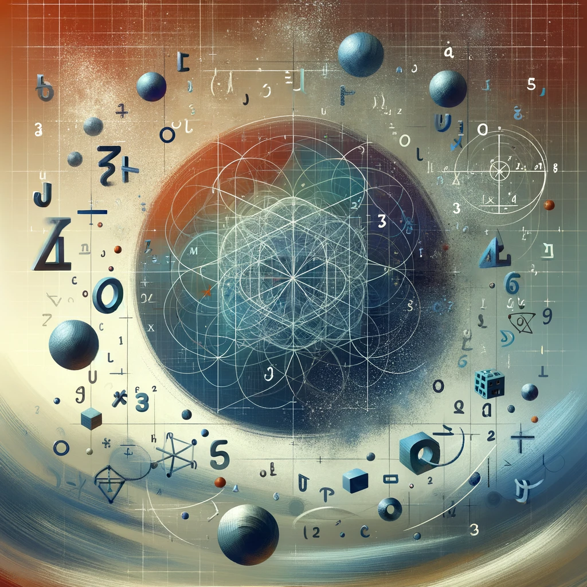

Welcome to my projects page!
Hey there! This is the page where I showcase what I've been working on and explain my programming projects. Here you will find links to GitHub repositories on my account, explanations of what I have done, and elaborations on plans for future work with the project. If you have a question or suggestion, feel free to message me on Discord (my username is crypto.neko) or submit a pull request on GitHub.
Table of Contents
1. Finite Abstract Algebra (Repository Link)
My quest to create a computational algebra system like SageMath on my own. Last post: May 11th, 2024.
2. Crypto Demo (Repository Link)
A repository I will use into the near future to experiment with different cryptographic algorithms and my own implementations. This will help me gain experience with cryptography and mathematical programming and it will be an enjoyable project to undertake. Last post: May 12th, 2024.
Finite Abstract AlgebraRepository Link
Initial PostMay 11th, 2024
My "Finite Abstract Algebra" project is a Python implementation of every algebraic object I can think of--at least, that's what it's going to be. Right now I have BinOp and Group objects, but I've been too busy to work on it lately. Maybe once I get the first version of this website up and I install Gentoo on my new laptop...I mean-
My inspiration for this project began has come from two sources: firstly, I wanted to take polymorphism in Python as far as I could and cover all the algebra I know, especially since I have rarely had a practical use for polymorphism in programming and I'd like to experiment with it; secondly, I've already written a full Diffie-Hellman implementation for elliptic curves over finite fields, which I also wrote the code for by myself, but I didn't write a way to implement non-prime fields and this would be one way of doing it. The goal in the end will be to have something akin to SageMath or Magma, which would serve the purpose of education, utility, and ultimately the enjoyment of creating it.
Anyway, that's why I'm doing it: now what is it I'm doing? I started by implementing an associative binary operation, which I've labeled BinOp. Next, I created the class Group that checks from a multiplication table if a group is valid and then initializes the object by calling the __init__ method inherented from BinOp. I'm currently working on a class for finite abelian groups: it's not that hard, but as I said, I'm busy! I'd like to have the user specify the generators of the group as a tuple like $(5, 13, 7)$, which would mean $\mathbb{Z}_5 \times \mathbb{Z}_{13} \times \mathbb{Z}_7 \cong \mathbb{Z}_5 \times \mathbb{Z}_{7} \times \mathbb{Z}_{13}$. The program would first order the tuple as (5, 7, 13) and then cycle through the generators until it reaches the order of the group. Then it would generate a multiplication table and create a Group object with it. Eventually I will build this up to finite fields and do my algebraic number theory homework with it and use it for isogeny-based cryptography--at least for fun, though I'll probably use SageMath for the real work. I'll post more about this soon when I have time to work on it again. Until then, check my repo for updates.
Crypto DemoRepository Link
Initial PostMay 12th, 2024
"Crypto Demo" is a collection of implementations of basic cryptosystems including the shift and subtitution ciphers (and soon many more) which I am developing to expand my knowledge of cryptography and improve my ability to implement cryptosystems in code. I eventually intend to write a GUI interface that will allow the user to choose a cryptosystem and generate a random key, and then potentially chain a few ciphers for a potentially more secure message. I will add this functionality after I have finished making the basic cryptosystems.
My motivation for starting this project is primarily to gain basic experience with programming cryptography so that I can apply it to my research in algebraic cryptography. The math behind these cryptosystems are very simple, but I find it is hard to really visualize them until one has written a full implementation and through doing so becomes familiar with the nuance that can arise when they are actively used. Thus, while not a very difficult task, "Crypto Demo" will help me gain an knowledge about how cryptography is directly implemented that I can apply to further endeavours with cryptography.
As of writing this post, I have implemented two ciphers so far, including test code for them. The first is the shift cipher, which traditionally shifts every letter of a message by some number of letters (i.e. by an integer mod 26, if the letters are being represented as integers mod 26). My implementation is more sophisticated, including support for any of the 128 standard ASCII characters, shifting each one of them by an integer mod 128. The substitution cipher is similar but more general: it assigns each character to another by an injective map, which is how the final message will be encrypted and decrypted. My code uses a Python dict as a rule of how to perform the substitution and checks to make sure it is injective. Once again I use ASCII codes instead of letters to accept more characters as input and make the cryptosystem more secure.
These two basic cryptosystems didn't take me long to implement and the rest should go pretty quickly for me as well. I might have all of the ciphers done by the time I update this page again. After finishing this demo I will likely continue to work on my "Finite Abstract Algebra" project, which I can then eventually use for cryptographic purposes, as it must be finished before I can do anything with elliptic curves over non-prime fields.